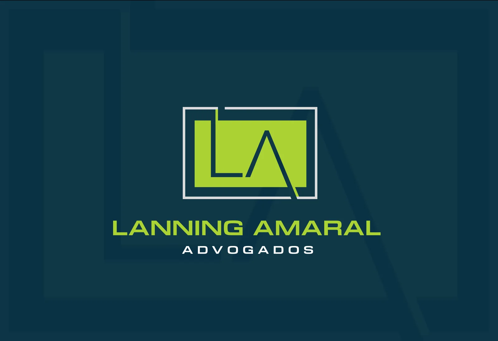
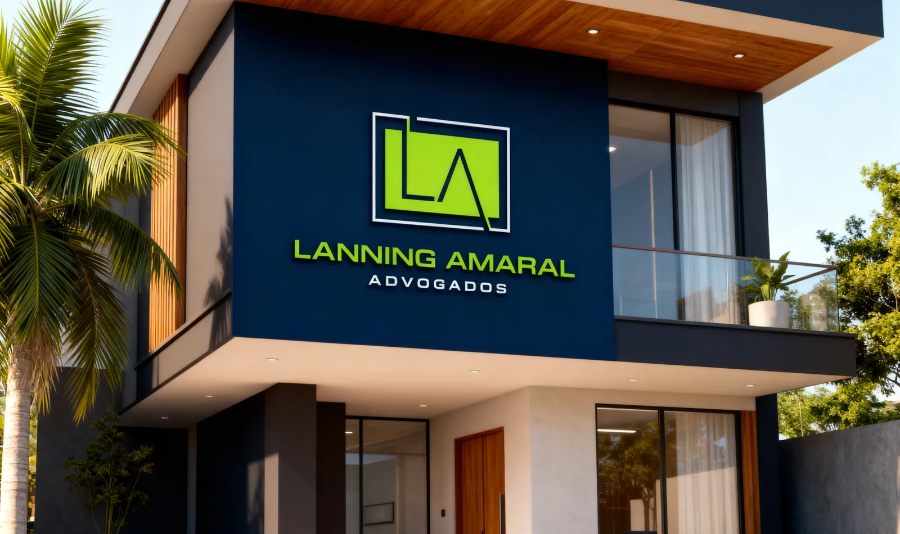

Atuação técnica, responsável e próxima da realidade do cliente
O Lanning Amaral Advogados atua em Jaciara/MT com atendimento presencial e online, análise cuidadosa dos documentos e orientação clara sobre os próximos passos.

Como o escritório conduz o atendimento
A equipe busca compreender os fatos, verificar prazos, analisar documentos e indicar caminhos compatíveis com a situação apresentada. Cada demanda é tratada conforme suas particularidades, sem promessa de resultado e sem linguagem apelativa.
O atendimento valoriza comunicação objetiva, organização documental e acompanhamento responsável, seja em demandas consultivas, extrajudiciais ou judiciais.
Princípios de atuação
- Análise cuidadosa dos documentos.
- Orientação clara sobre riscos, prazos e possibilidades.
- Atuação conforme a urgência e os elementos do caso.
- Comunicação objetiva durante o acompanhamento da demanda.

Jaciara/MT e região
O escritório atende pessoas, famílias, trabalhadores, produtores rurais, servidores públicos e empresas que precisam organizar documentos, compreender direitos e avaliar medidas jurídicas cabíveis.
Entrar em contato